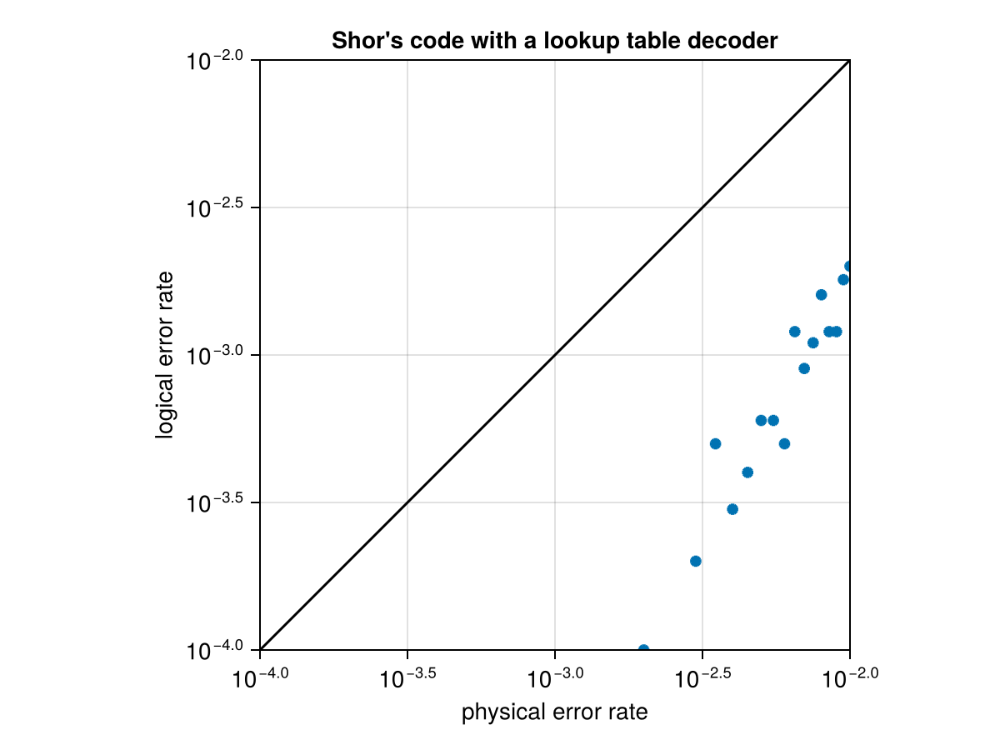
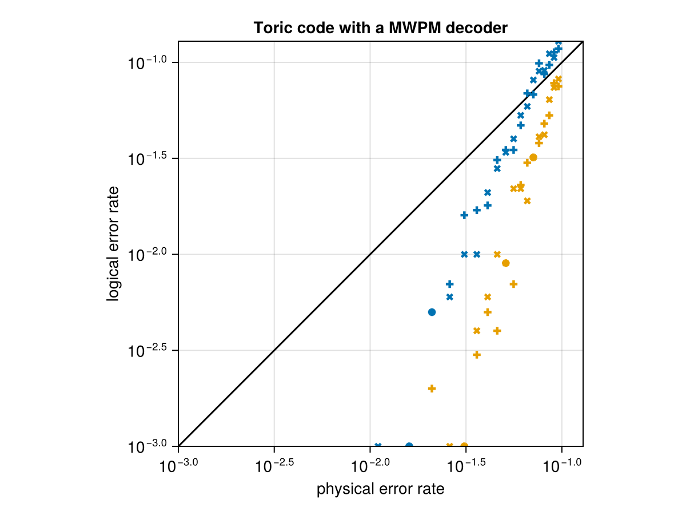

Evaluating an ECC code and decoders
While waiting for a better documentation than the small example below, consider looking into evaluate_decoder, TableDecoder, BeliefPropDecoder, PyBeliefPropDecoder, PyMatchingDecoder, CommutationCheckECCSetup, NaiveSyndromeECCSetup, ShorSyndromeECCSetup
This is a quick and durty example on how to use some of the decoders.
A function to plot the results of
using CairoMakie
function make_decoder_figure(phys_errors, results, title="")
minlim = min(minimum(phys_errors),minimum(results[results.!=0]))
maxlim = min(1, max(maximum(phys_errors),maximum(results[results.!=0])))
fresults = copy(results)
fresults[results.==0] .= NaN
f = Figure()
a = Axis(f[1,1],
xscale=log10, yscale=log10,
limits=(minlim,maxlim,minlim,maxlim),
aspect=DataAspect(),
xlabel="physical error rate",
ylabel="logical error rate",
title=title)
lines!(a, [minlim,maxlim],[minlim,maxlim], color=:black)
for (i,sresults) in enumerate(eachslice(fresults, dims=1))
scatter!(a, phys_errors, sresults[:,1], marker=:+, color=Cycled(i))
scatter!(a, phys_errors, sresults[:,2], marker=:x, color=Cycled(i))
end
f
endmake_decoder_figure (generic function with 2 methods)Testing out a lookup table decoder on a small code.
using QuantumClifford
using QuantumClifford.ECC
mem_errors = 0.001:0.0005:0.01
codes = [Shor9()]
results = zeros(length(codes), length(mem_errors), 2)
for (ic, c) in pairs(codes)
for (i,m) in pairs(mem_errors)
setup = CommutationCheckECCSetup(m)
decoder = TableDecoder(c)
r = evaluate_decoder(decoder, setup, 10000)
results[ic,i,:] .= r
end
end
make_decoder_figure(mem_errors, results, "Shor's code with a lookup table decoder")
Testing out the toric code with a decoder provided by the python package pymatching (provided in julia by the meta package PyQDecoders.jl).
import PyQDecoders
mem_errors = 0.001:0.005:0.1
codes = [Toric(4,4), Toric(6,6)]
results = zeros(length(codes), length(mem_errors), 2)
for (ic, c) in pairs(codes)
for (i,m) in pairs(mem_errors)
setup = ShorSyndromeECCSetup(m, 0)
decoder = PyMatchingDecoder(c)
r = evaluate_decoder(decoder, setup, 1000)
results[ic,i,:] .= r
end
end
make_decoder_figure(mem_errors, results, "Toric code with a MWPM decoder")